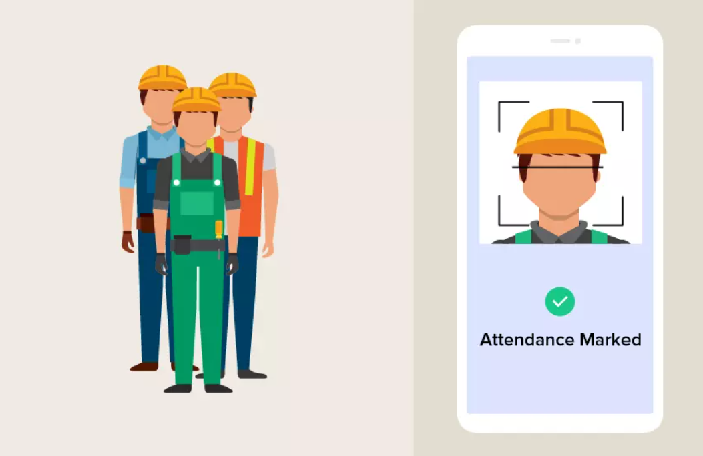
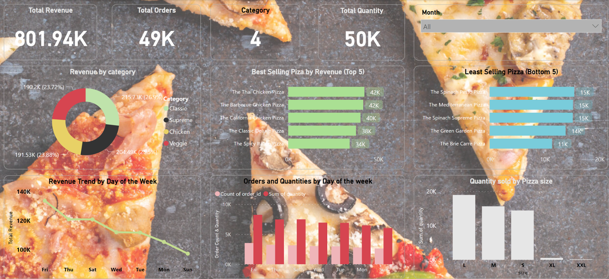
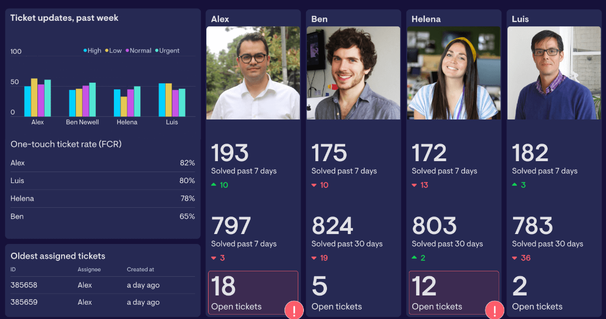
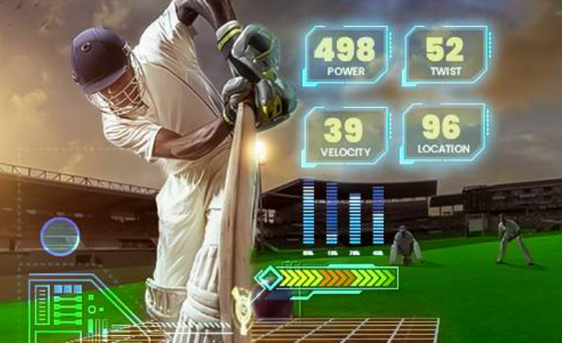

April, 2024
Drowsiness is a major concern with respect to road safety.
Driver's unconsciousness due to microsleep can frequently lead to destructive accidents.
This work presents a non-invasive system for real-time driver drowsiness detection using visual features.
Many of these accidents can be eliminated by alerting the drivers once they start feeling drowsy.

This application automates attendance-taking using facial recognition technology. It eliminates the need for manual attendance-taking, which is time-consuming and prone to errors.
The attendance log is stored in Csv format for easy access and manipulation.
This disbursement dashboard is a tool that allows you to monitor and manage your payment operations.
This dashboard gives a clear overview of payment activity and status.Track progress of payments, monitor your payment history, and generate reports.
In this Project, Using Power BI created a visual representation of the overall position of professionals working in the Data Domain,
based on various factors including salary, job title, country, and more.
The data for this analysis was gathered from a survey of 630 professionals.
Data professionals are in high demand, and organizations are looking for ways to attract and retain top talent in the field.
To better understand the needs and preferences of data professionals.

This "Pizza Sales Dashboard" offers a dynamic and insightful view of pizza sales data, providing valuable information to drive decision-making and business optimization.
This interactive dashboard covers a specified date range,
allowing users to explore sales trends, identify best and worst-selling pizzas, and monitor key performance indicators (KPIs)
such as total revenue, total orders, average order value, and average pizzas sold per order.
This Notepad application is a text editor, i.e., an app specialized in editing plain text.
It shows all the notes in the main page, and allows the user to add new notes,
edit existing notes, and delete notes by swiping them.
The notes on the main page can be scrolled and edited, and a button is provided for adding a new note.
In this Project,To develop the calculator for some specific set of reasons,
this calculator is a simple gadget, and we have seen, used, and misused several of these.
This calculator will be able to do all the basic arithmetic operations such as
addition, subtraction, multiplication, and division.

In this Project,If a company sells a product or offers a service, they probably also have some kind of ticketing system to manage client questions or issues.
This ticket dashboard collects all client tickets and provides a centralized place for support teams to view and manage the issues and requests.
It provides a quick, visual overview of ticket status, ticket volume and overall team performance.

This project redefines cricket data analysis and decision-making by harmoniously merging advanced analytics
with a user-friendly interface, setting a new standard in sports analytics and unlocking fresh insights in the world of cricket.
It can easily analyse the data of the matches played in the world cup.
And also choose our best playing 12 from the pool of players playing the world cup.